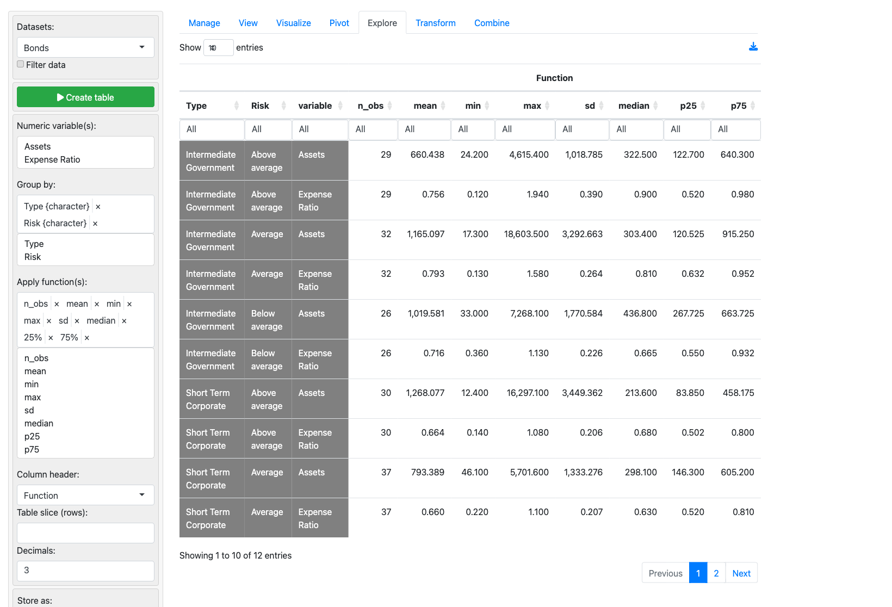
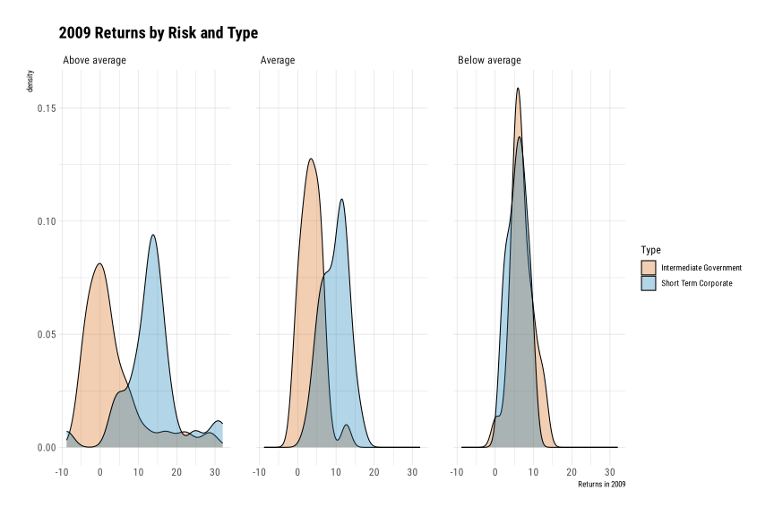
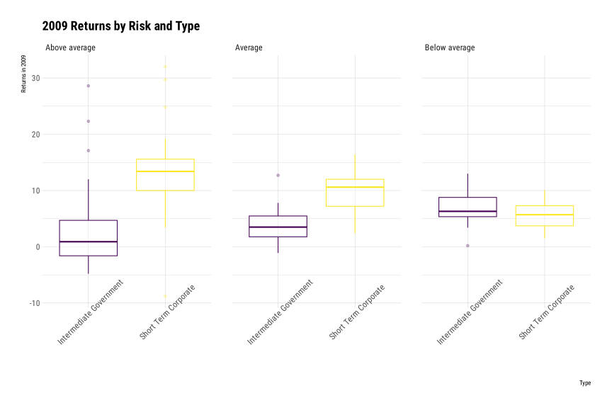
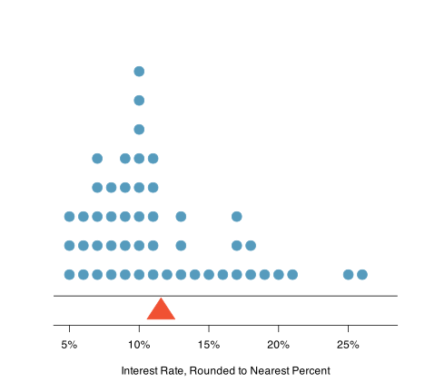

Data Analysis, Modeling, and Decision-Making
Lecture 1: Welcome and Introduction
Who am I? Who are We?
Statistics are but one warrant
- And sometimes not even a good one.
- Emphasize the importance of a variety of tools for data.
- Quantities are but one form of data.
A syllabus
- Let’s walk through that.
- On Canvas, Files > Syllabus
Administrative Things
Your Task for Next Time:
- Read Toulmin and examine the slide excerpt. Do a bit of research, perhaps using an LLM, to bring yourself to a one paragraph summary.
- Prepare to discuss: what is a large language model?
- Are LLM’s authoritative sources? What managerial challenges does this present or does it?
A Bit of First Day Work
Some Example Data
The data are Bond.Funds. We have an ID, Type, Assets, Fees [Yes or No], Expense Ratio, Returns in 2009, 3 year, 5 year, and a Risk classification. A link to the data in Excel format NB auto-downloads..
The Data
| Fund Number | Type | Assets | Fees | Expense Ratio | Return 2009 | 3-Year Return | 5-Year Return | Risk |
|---|---|---|---|---|---|---|---|---|
| FN-1 | Intermediate Government | 7268.1 | No | 0.45 | 6.9 | 6.9 | 5.5 | Below average |
| FN-2 | Intermediate Government | 475.1 | No | 0.50 | 9.8 | 7.5 | 6.1 | Below average |
| FN-3 | Intermediate Government | 193.0 | No | 0.71 | 6.3 | 7.0 | 5.6 | Average |
| FN-4 | Intermediate Government | 18603.5 | No | 0.13 | 5.4 | 6.6 | 5.5 | Average |
| FN-5 | Intermediate Government | 142.6 | No | 0.60 | 5.9 | 6.7 | 5.4 | Average |
| FN-6 | Intermediate Government | 1401.6 | No | 0.54 | 5.7 | 6.4 | 6.2 | Average |
| FN-7 | Intermediate Government | 985.6 | No | 0.49 | 3.0 | 6.8 | 5.3 | Average |
| FN-8 | Intermediate Government | 2188.8 | No | 0.55 | 7.4 | 6.4 | 5.2 | Below average |
| FN-9 | Intermediate Government | 390.6 | No | 0.67 | 5.3 | 6.1 | 5.0 | Below average |
| FN-10 | Intermediate Government | 544.1 | No | 0.63 | 5.7 | 6.2 | 5.1 | Below average |
| FN-11 | Intermediate Government | 1407.4 | No | 0.45 | 0.9 | 6.2 | 4.7 | Average |
| FN-12 | Intermediate Government | 155.5 | No | 0.91 | 12.4 | 6.4 | 5.1 | Below average |
| FN-13 | Intermediate Government | 397.5 | No | 0.60 | 6.0 | 6.3 | 5.1 | Below average |
| FN-14 | Intermediate Government | 906.1 | No | 0.51 | 8.1 | 6.1 | 5.1 | Below average |
| FN-15 | Intermediate Government | 379.1 | No | 0.57 | 5.7 | 6.6 | 5.2 | Below average |
| FN-16 | Intermediate Government | 62.7 | No | 0.74 | 4.5 | 7.8 | 5.6 | Above average |
| FN-17 | Intermediate Government | 1539.1 | No | 0.66 | 6.4 | 6.2 | 5.0 | Below average |
| FN-18 | Intermediate Government | 167.3 | No | 0.60 | 5.8 | 6.2 | 5.1 | Below average |
| FN-19 | Intermediate Government | 448.0 | No | 0.77 | 10.1 | 6.5 | 5.3 | Below average |
| FN-20 | Intermediate Government | 238.1 | No | 1.13 | 4.4 | 5.5 | 4.3 | Below average |
| FN-21 | Intermediate Government | 557.8 | No | 0.74 | 9.0 | 6.0 | 4.9 | Below average |
| FN-22 | Intermediate Government | 192.7 | No | 0.70 | 3.2 | 6.0 | 4.9 | Average |
| FN-23 | Intermediate Government | 261.8 | Yes | 1.08 | 3.5 | 5.1 | 4.0 | Below average |
| FN-24 | Intermediate Government | 135.8 | No | 0.65 | -1.1 | 6.0 | 4.6 | Average |
| FN-25 | Intermediate Government | 1807.3 | Yes | 0.80 | 7.8 | 6.1 | 4.9 | Average |
| FN-26 | Intermediate Government | 4615.4 | No | 0.45 | 1.3 | 6.7 | 5.2 | Above average |
| FN-27 | Intermediate Government | 86.2 | No | 0.61 | -0.2 | 5.6 | 4.4 | Average |
| FN-28 | Intermediate Government | 291.1 | Yes | 1.10 | 5.1 | 5.8 | 4.6 | Below average |
| FN-29 | Intermediate Government | 6332.5 | Yes | 0.73 | 4.8 | 6.0 | 4.9 | Below average |
| FN-30 | Intermediate Government | 110.7 | No | 1.08 | 1.9 | 5.4 | 4.2 | Average |
| FN-31 | Intermediate Government | 619.7 | Yes | 0.96 | 5.0 | 5.9 | 4.9 | Average |
| FN-32 | Intermediate Government | 628.7 | No | 0.55 | 2.1 | 6.3 | 5.1 | Above average |
| FN-33 | Intermediate Government | 274.3 | No | 0.80 | 12.7 | 6.1 | 5.0 | Average |
| FN-34 | Intermediate Government | 891.8 | Yes | 0.88 | 4.2 | 6.6 | 5.1 | Average |
| FN-35 | Intermediate Government | 94.7 | Yes | 0.83 | 3.5 | 6.4 | 5.1 | Average |
| FN-36 | Intermediate Government | 676.3 | Yes | 0.93 | 22.3 | 9.4 | 6.4 | Above average |
| FN-37 | Intermediate Government | 1182.1 | Yes | 0.92 | 28.6 | 9.4 | 6.8 | Above average |
| FN-38 | Intermediate Government | 135.9 | No | 0.47 | 13.0 | 5.1 | 4.5 | Below average |
| FN-39 | Intermediate Government | 588.8 | Yes | 0.96 | 5.2 | 6.7 | 5.3 | Average |
| FN-40 | Intermediate Government | 40.0 | No | 1.94 | 17.1 | 6.6 | 5.1 | Above average |
| FN-41 | Intermediate Government | 1080.4 | No | 0.95 | 3.5 | 6.0 | 4.7 | Average |
| FN-42 | Intermediate Government | 309.1 | Yes | 0.98 | 0.0 | 5.8 | 4.4 | Above average |
| FN-43 | Intermediate Government | 4472.2 | Yes | 0.64 | 2.2 | 5.5 | 4.4 | Average |
| FN-44 | Intermediate Government | 498.7 | Yes | 0.95 | 0.9 | 4.9 | 4.1 | Above average |
| FN-45 | Intermediate Government | 278.2 | No | 0.20 | -3.8 | 6.0 | 4.7 | Above average |
| FN-46 | Intermediate Government | 1525.5 | No | 0.13 | -0.7 | 7.1 | 5.3 | Above average |
| FN-47 | Intermediate Government | 556.6 | Yes | 0.94 | 7.9 | 5.5 | 4.3 | Above average |
| FN-48 | Intermediate Government | 588.6 | Yes | 0.96 | 6.2 | 5.1 | 4.4 | Below average |
| FN-49 | Intermediate Government | 332.5 | Yes | 1.00 | 3.7 | 4.7 | 4.0 | Average |
| FN-50 | Intermediate Government | 84.9 | No | 0.71 | 11.2 | 3.9 | 3.7 | Below average |
| FN-51 | Intermediate Government | 17.3 | No | 1.58 | 2.1 | 4.9 | 3.7 | Average |
| FN-52 | Intermediate Government | 104.1 | Yes | 0.95 | -3.6 | 4.7 | 3.7 | Above average |
| FN-53 | Intermediate Government | 530.7 | Yes | 0.92 | 4.6 | 5.5 | 4.5 | Average |
| FN-54 | Intermediate Government | 333.6 | No | 0.37 | 12.0 | 4.9 | 4.5 | Above average |
| FN-55 | Intermediate Government | 1133.3 | No | 0.46 | 3.4 | 2.3 | 2.5 | Below average |
| FN-56 | Intermediate Government | 322.5 | Yes | 1.13 | 4.7 | 5.6 | 4.4 | Above average |
| FN-57 | Intermediate Government | 123.8 | No | 0.75 | 6.4 | 3.3 | 3.2 | Average |
| FN-58 | Intermediate Government | 425.6 | Yes | 0.97 | 9.1 | 4.7 | 4.1 | Below average |
| FN-59 | Intermediate Government | 184.7 | Yes | 1.03 | 1.7 | 5.6 | 4.4 | Above average |
| FN-60 | Intermediate Government | 122.7 | No | 0.26 | -3.6 | 6.1 | 4.7 | Above average |
| FN-61 | Intermediate Government | 107.2 | No | 0.90 | 0.1 | 5.3 | 4.0 | Average |
| FN-62 | Intermediate Government | 135.6 | Yes | 1.15 | 3.7 | 5.9 | 4.4 | Average |
| FN-63 | Intermediate Government | 82.2 | No | 0.57 | -3.3 | 5.1 | 4.2 | Above average |
| FN-64 | Intermediate Government | 305.7 | Yes | 0.99 | 3.0 | 6.2 | 4.9 | Above average |
| FN-65 | Intermediate Government | 551.3 | No | 0.52 | -1.4 | 7.3 | 5.2 | Above average |
| FN-66 | Intermediate Government | 24.2 | No | 0.52 | 0.7 | -0.1 | 1.2 | Above average |
| FN-67 | Intermediate Government | 661.2 | Yes | 0.97 | 0.0 | 3.2 | 3.0 | Above average |
| FN-68 | Intermediate Government | 154.6 | Yes | 0.90 | 2.9 | 2.4 | 2.6 | Average |
| FN-69 | Intermediate Government | 106.9 | Yes | 0.79 | -4.8 | 5.6 | 4.6 | Above average |
| FN-70 | Intermediate Government | 1011.1 | Yes | 0.87 | 1.4 | 1.6 | 2.3 | Average |
| FN-71 | Intermediate Government | 634.8 | Yes | 0.90 | 7.3 | 3.7 | 3.4 | Above average |
| FN-72 | Intermediate Government | 168.7 | Yes | 0.99 | -2.9 | 6.0 | 4.1 | Above average |
| FN-73 | Intermediate Government | 792.1 | Yes | 1.00 | 1.2 | 2.3 | 2.6 | Above average |
| FN-74 | Intermediate Government | 583.5 | No | 0.50 | 6.0 | 7.3 | 5.7 | Average |
| FN-75 | Intermediate Government | 56.1 | No | 0.65 | 0.7 | 5.2 | 4.4 | Average |
| FN-76 | Intermediate Government | 285.5 | No | 0.36 | 7.1 | 5.5 | 4.8 | Below average |
| FN-77 | Intermediate Government | 640.3 | No | 0.27 | 0.2 | 6.5 | 5.2 | Above average |
| FN-78 | Intermediate Government | 84.7 | Yes | 1.00 | -0.6 | 2.5 | 2.5 | Average |
| FN-79 | Intermediate Government | 81.3 | Yes | 1.16 | 7.0 | 1.0 | 1.7 | Above average |
| FN-80 | Intermediate Government | 611.7 | No | 0.51 | 6.5 | 6.8 | 5.5 | Average |
| FN-81 | Intermediate Government | 595.1 | No | 0.55 | 5.5 | 6.3 | 5.2 | Below average |
| FN-82 | Intermediate Government | 131.3 | No | 0.65 | -3.8 | 4.4 | 3.8 | Above average |
| FN-83 | Intermediate Government | 88.0 | No | 0.82 | 2.0 | 5.8 | 4.5 | Average |
| FN-84 | Intermediate Government | 686.6 | Yes | 0.94 | 7.2 | 3.7 | 3.5 | Below average |
| FN-85 | Intermediate Government | 3531.8 | No | 0.12 | -1.6 | 7.2 | 5.4 | Above average |
| FN-86 | Intermediate Government | 358.0 | Yes | 1.06 | 0.5 | 4.9 | 4.0 | Average |
| FN-87 | Intermediate Government | 33.0 | No | 1.00 | 0.2 | 6.1 | 4.8 | Below average |
| FN-88 | Short Term Corporate | 139.1 | No | 0.51 | 5.5 | 5.1 | 4.3 | Below average |
| FN-89 | Short Term Corporate | 123.9 | No | 0.32 | 5.0 | 4.4 | 4.1 | Below average |
| FN-90 | Short Term Corporate | 1922.0 | Yes | 1.08 | 12.1 | 5.5 | 5.0 | Average |
| FN-91 | Short Term Corporate | 203.4 | Yes | 1.00 | 8.3 | 5.2 | 4.4 | Below average |
| FN-92 | Short Term Corporate | 66.1 | No | 0.71 | 6.8 | 4.9 | 4.0 | Below average |
| FN-93 | Short Term Corporate | 1346.0 | No | 0.65 | 8.6 | 6.1 | 4.8 | Below average |
| FN-94 | Short Term Corporate | 4772.9 | No | 0.56 | 5.0 | 4.9 | 4.2 | Below average |
| FN-95 | Short Term Corporate | 77.5 | No | 0.51 | 2.2 | 3.7 | 3.5 | Below average |
| FN-96 | Short Term Corporate | 76.2 | No | 0.68 | 2.5 | 5.2 | 4.2 | Below average |
| FN-97 | Short Term Corporate | 146.3 | No | 0.55 | 12.2 | 5.8 | 4.8 | Average |
| FN-98 | Short Term Corporate | 49.2 | No | 0.60 | 10.0 | 5.0 | 4.6 | Average |
| FN-99 | Short Term Corporate | 96.1 | No | 0.73 | 7.3 | 4.8 | 4.1 | Below average |
| FN-100 | Short Term Corporate | 226.8 | No | 0.45 | 2.9 | 3.6 | 3.6 | Below average |
| FN-101 | Short Term Corporate | 122.3 | No | 0.53 | 7.3 | 5.9 | 4.6 | Average |
| FN-102 | Short Term Corporate | 725.9 | No | 0.68 | 15.5 | 5.9 | 4.7 | Average |
| FN-103 | Short Term Corporate | 1248.4 | No | 0.72 | 14.0 | 5.5 | 4.7 | Average |
| FN-104 | Short Term Corporate | 36.5 | No | 0.76 | 5.5 | 5.0 | 4.0 | Below average |
| FN-105 | Short Term Corporate | 127.4 | No | 0.45 | 3.6 | 3.3 | 3.3 | Below average |
| FN-106 | Short Term Corporate | 605.2 | No | 0.30 | 8.1 | 4.1 | 3.7 | Average |
| FN-107 | Short Term Corporate | 1879.2 | No | 0.48 | 9.6 | 4.9 | 4.2 | Average |
| FN-108 | Short Term Corporate | 964.7 | Yes | 0.85 | 12.9 | 7.1 | 5.3 | Average |
| FN-109 | Short Term Corporate | 325.3 | No | 0.53 | 10.7 | 4.5 | 4.1 | Average |
| FN-110 | Short Term Corporate | 69.8 | No | 0.90 | 6.0 | 4.6 | 3.8 | Average |
| FN-111 | Short Term Corporate | 177.8 | Yes | 0.94 | 8.2 | 5.4 | 4.4 | Below average |
| FN-112 | Short Term Corporate | 156.6 | No | 0.63 | 12.0 | 6.3 | 4.9 | Average |
| FN-113 | Short Term Corporate | 244.9 | No | 0.81 | 16.4 | 5.5 | 4.6 | Average |
| FN-114 | Short Term Corporate | 475.5 | Yes | 0.91 | 6.0 | 6.4 | 4.7 | Average |
| FN-115 | Short Term Corporate | 46.1 | No | 0.92 | 5.4 | 4.2 | 3.6 | Average |
| FN-116 | Short Term Corporate | 181.3 | No | 0.36 | 4.9 | 4.5 | 3.8 | Average |
| FN-117 | Short Term Corporate | 63.8 | Yes | 0.62 | 8.6 | 5.5 | 4.3 | Average |
| FN-118 | Short Term Corporate | 135.4 | No | 0.70 | 6.8 | 4.2 | 3.7 | Below average |
| FN-119 | Short Term Corporate | 388.0 | No | 0.56 | 6.7 | 4.6 | 3.8 | Below average |
| FN-120 | Short Term Corporate | 18.6 | No | 0.89 | 4.1 | 3.4 | 3.1 | Below average |
| FN-121 | Short Term Corporate | 298.1 | No | 0.51 | 11.2 | 5.0 | 4.3 | Average |
| FN-122 | Short Term Corporate | 461.3 | No | 0.46 | 8.4 | 4.5 | 4.0 | Average |
| FN-123 | Short Term Corporate | 159.9 | Yes | 0.80 | 5.9 | 4.8 | 4.0 | Below average |
| FN-124 | Short Term Corporate | 3662.7 | No | 0.52 | 9.0 | 5.2 | 4.3 | Average |
| FN-125 | Short Term Corporate | 42.6 | No | 0.74 | 5.4 | 4.6 | 4.0 | Below average |
| FN-126 | Short Term Corporate | 111.4 | No | 0.97 | 9.1 | 4.5 | 3.7 | Below average |
| FN-127 | Short Term Corporate | 114.5 | No | 0.65 | 9.5 | 4.9 | 4.1 | Below average |
| FN-128 | Short Term Corporate | 5282.9 | No | 0.22 | 4.3 | 5.6 | 4.4 | Average |
| FN-129 | Short Term Corporate | 17.4 | No | 0.75 | 2.8 | 3.9 | 3.4 | Below average |
| FN-130 | Short Term Corporate | 518.0 | No | 0.72 | 10.8 | 6.4 | 4.9 | Average |
| FN-131 | Short Term Corporate | 262.5 | No | 0.85 | 9.5 | 4.4 | 3.9 | Below average |
| FN-132 | Short Term Corporate | 93.9 | No | 0.74 | 9.4 | 5.5 | 4.3 | Above average |
| FN-133 | Short Term Corporate | 1130.0 | Yes | 0.86 | 13.2 | 6.5 | 4.9 | Above average |
| FN-134 | Short Term Corporate | 1101.9 | No | 0.64 | 13.0 | 3.5 | 3.8 | Above average |
| FN-135 | Short Term Corporate | 49.9 | No | 0.60 | 1.6 | 1.3 | 2.3 | Below average |
| FN-136 | Short Term Corporate | 640.3 | No | 0.54 | 7.0 | 2.3 | 2.7 | Below average |
| FN-137 | Short Term Corporate | 477.4 | No | 0.60 | 12.9 | 4.6 | 3.9 | Average |
| FN-138 | Short Term Corporate | 569.4 | No | 0.52 | 12.0 | 4.9 | 4.0 | Average |
| FN-139 | Short Term Corporate | 36.8 | No | 0.38 | 3.6 | 1.7 | 2.5 | Below average |
| FN-140 | Short Term Corporate | 145.4 | Yes | 0.90 | 10.1 | 3.1 | 3.0 | Below average |
| FN-141 | Short Term Corporate | 148.9 | No | 1.10 | 7.7 | 4.3 | 3.4 | Average |
| FN-142 | Short Term Corporate | 195.8 | No | 0.52 | 7.2 | 4.2 | 3.6 | Average |
| FN-143 | Short Term Corporate | 2361.1 | Yes | 0.80 | 17.4 | 7.1 | 5.1 | Above average |
| FN-144 | Short Term Corporate | 12.4 | No | 0.70 | 3.4 | 5.5 | 4.2 | Above average |
| FN-145 | Short Term Corporate | 26.3 | No | 0.49 | 4.0 | 6.0 | 4.6 | Above average |
| FN-146 | Short Term Corporate | 681.0 | Yes | 0.75 | 11.3 | 3.5 | 3.3 | Average |
| FN-147 | Short Term Corporate | 486.1 | No | 0.50 | 10.3 | 5.7 | 4.4 | Above average |
| FN-148 | Short Term Corporate | 10744.6 | No | 0.46 | 13.4 | 6.5 | 4.9 | Above average |
| FN-149 | Short Term Corporate | 108.9 | No | 0.63 | 11.4 | 4.1 | 3.6 | Average |
| FN-150 | Short Term Corporate | 69.0 | Yes | 0.98 | 5.2 | 4.7 | 3.4 | Below average |
| FN-151 | Short Term Corporate | 128.3 | No | 0.55 | 8.8 | 5.9 | 4.5 | Above average |
| FN-152 | Short Term Corporate | 374.4 | No | 0.73 | 13.2 | 4.6 | 3.8 | Above average |
| FN-153 | Short Term Corporate | 280.6 | Yes | 0.99 | 16.6 | 8.0 | 4.6 | Above average |
| FN-154 | Short Term Corporate | 456.2 | No | 0.37 | 13.6 | 3.7 | 3.5 | Average |
| FN-155 | Short Term Corporate | 16297.1 | No | 0.14 | 14.2 | 4.9 | 4.4 | Above average |
| FN-156 | Short Term Corporate | 517.0 | No | 0.65 | 10.6 | 4.7 | 3.8 | Average |
| FN-157 | Short Term Corporate | 80.5 | No | 0.70 | 13.4 | 5.1 | 4.2 | Above average |
| FN-158 | Short Term Corporate | 119.3 | No | 0.82 | 6.0 | 5.0 | 4.0 | Average |
| FN-159 | Short Term Corporate | 88.3 | No | 0.92 | 4.5 | 1.0 | 1.7 | Average |
| FN-160 | Short Term Corporate | 5701.6 | Yes | 0.69 | 6.7 | 3.4 | 3.1 | Average |
| FN-161 | Short Term Corporate | 478.4 | No | 0.64 | 6.8 | 2.2 | 2.4 | Below average |
| FN-162 | Short Term Corporate | 369.3 | No | 0.86 | 13.5 | 2.7 | 2.6 | Above average |
| FN-163 | Short Term Corporate | 297.4 | Yes | 1.05 | 12.8 | 2.6 | 2.7 | Above average |
| FN-164 | Short Term Corporate | 230.6 | No | 0.95 | 13.9 | 3.5 | 3.2 | Average |
| FN-165 | Short Term Corporate | 115.7 | Yes | 0.70 | 11.5 | 1.8 | 2.4 | Average |
| FN-166 | Short Term Corporate | 6981.5 | No | 0.45 | 7.3 | 1.7 | 2.4 | Below average |
| FN-167 | Short Term Corporate | 190.1 | No | 0.50 | 11.6 | 5.5 | 4.4 | Above average |
| FN-168 | Short Term Corporate | 278.4 | Yes | 0.85 | 15.5 | 4.4 | 3.8 | Above average |
| FN-169 | Short Term Corporate | 246.1 | No | 0.75 | 11.9 | 0.8 | 2.0 | Average |
| FN-170 | Short Term Corporate | 143.8 | No | 0.80 | 24.8 | 8.9 | 6.4 | Above average |
| FN-171 | Short Term Corporate | 1469.6 | Yes | 1.08 | 29.7 | 4.8 | 4.3 | Above average |
| FN-172 | Short Term Corporate | 80.0 | No | 0.70 | 9.9 | 2.9 | 3.0 | Above average |
| FN-173 | Short Term Corporate | 95.5 | No | 0.66 | 19.2 | 0.0 | 1.3 | Above average |
| FN-174 | Short Term Corporate | 170.5 | No | 0.46 | 15.6 | 0.7 | 2.0 | Above average |
| FN-175 | Short Term Corporate | 95.4 | Yes | 1.02 | 1.5 | -0.2 | 1.8 | Below average |
| FN-176 | Short Term Corporate | 237.1 | No | 0.50 | 14.5 | 0.7 | 1.7 | Above average |
| FN-177 | Short Term Corporate | 983.0 | No | 0.60 | 15.2 | 0.2 | 1.9 | Above average |
| FN-178 | Short Term Corporate | 51.9 | No | 0.70 | 13.4 | 0.1 | 1.2 | Above average |
| FN-179 | Short Term Corporate | 249.7 | No | 0.55 | 2.4 | 0.4 | 1.5 | Average |
| FN-180 | Short Term Corporate | 33.8 | No | 0.53 | 16.4 | 0.7 | 1.8 | Above average |
| FN-181 | Short Term Corporate | 249.8 | Yes | 0.43 | 6.7 | -4.5 | -1.5 | Above average |
| FN-182 | Short Term Corporate | 52.9 | No | 0.87 | 5.2 | -3.0 | -0.7 | Above average |
| FN-183 | Short Term Corporate | 39.7 | No | 0.51 | -8.8 | -13.8 | -7.3 | Above average |
| FN-184 | Short Term Corporate | 182.3 | No | 0.53 | 32.0 | -2.7 | 0.2 | Above average |
Some Essential Excel
- Formulae
- Absolute and relative references
- Pivot tables
It has some nice features.
It fails the simple test of manipulability of the underlying data.
Formulae
Pre-programmed functions that take input ranges of cells and produce particular outputs.
e.g. set cell J5 to be:
=AVERAGE(C2:C21)This averages the range between C2 and C21 [Assets].
A Visual

Image
Adjusting Formulae
When we copy this left or right, up or down, the numbers and/or letters adjust.
Copy that formula and paste it into K5. Then L5.
A Visual

Image
A Bit More Complex
Let’s try to make column M into =C2 - J5 , then C3-J5, etc. all the way down to C21.
The 5 won’t stop changing.
Cell Referencing
We may not want that. Suppose that I want to create a column showing the difference of assets and average assets. In essence, we have rescaled assets such that 0 is the average and we are measuring above or below that average [and by how much]. The $ holds an index constant [F4]. We have two. In our case, we can hold both the rows and the column constant for the average.
Because we are only copying down, the $5 would have sufficed.
=C2 - $J$5
=C2 - J$5Then copy the formula down to L21. Notice the C changes [no $] but the J doesn’t. The $ enables absolute cell referencing.
As expected. Average assets over the first 20 is 1894.7; the first is 5373.4 above the average for this set.
A Visual

Image
Formulae and Recursion
This can become quite involved; spreadsheets are programming tools. Their underlying problem is that they do not enforce rules or discipline along the way.
The key to our formulae are one or more inputs, a series of transformation and operations, and one or more outputs defined in a precise fashion. As an aside, the father of recursion as a core principle in computer science is teaching at Willamette this term – Eric S. Roberts. Functions link inputs and outputs.
They are models.
Pivot Tables
Pivot Tables
Are really cool; they are a very simple and quick way to slice and data and to gain useful comparative and/or summary insight.
They have the added virtue of being drag and drop.
Example

All of the action comes in the calculations shown in the pivot table. Unfortunately, it is extraordinarily limited.
- What if I want the median?
- How about the first and third quartiles?
Cautionary Tale
R-escue
This will become easy with the group_by command in R’s tidyverse.
Code
| Type | Avg.Assets | Med.Assets | Assets 25th | Assets 75th |
|---|---|---|---|---|
| Intermediate Government | 953 | 379 | 135.8 | 669 |
| Short Term Corporate | 872 | 190 | 95.4 | 486 |
Visual

Median

And it scales
Code
| Type | Risk | Avg.Assets | Med.Assets | Assets 25th | Assets 75th |
|---|---|---|---|---|---|
| Intermediate Government | Above average | 660 | 322 | 122.7 | 640 |
| Intermediate Government | Average | 1165 | 303 | 120.5 | 915 |
| Intermediate Government | Below average | 1020 | 437 | 267.7 | 664 |
| Short Term Corporate | Above average | 1268 | 214 | 83.8 | 458 |
| Short Term Corporate | Average | 793 | 298 | 146.3 | 605 |
| Short Term Corporate | Below average | 574 | 126 | 70.8 | 221 |
Visual

skim()
| Name | Piped data |
| Number of rows | 184 |
| Number of columns | 9 |
| _______________________ | |
| Column type frequency: | |
| numeric | 1 |
| ________________________ | |
| Group variables | Type, Risk |
Variable type: numeric
| skim_variable | Type | Risk | n_missing | complete_rate | mean | sd | p0 | p25 | p50 | p75 | p100 | hist |
|---|---|---|---|---|---|---|---|---|---|---|---|---|
| Assets | Intermediate Government | Above average | 0 | 1 | 660 | 1019 | 24.2 | 122.7 | 322 | 640 | 4615 | ▇▁▁▁▁ |
| Assets | Intermediate Government | Average | 0 | 1 | 1165 | 3293 | 17.3 | 120.5 | 303 | 915 | 18604 | ▇▁▁▁▁ |
| Assets | Intermediate Government | Below average | 0 | 1 | 1020 | 1771 | 33.0 | 267.7 | 437 | 664 | 7268 | ▇▁▁▁▁ |
| Assets | Short Term Corporate | Above average | 0 | 1 | 1268 | 3449 | 12.4 | 83.8 | 214 | 458 | 16297 | ▇▁▁▁▁ |
| Assets | Short Term Corporate | Average | 0 | 1 | 793 | 1333 | 46.1 | 146.3 | 298 | 605 | 5702 | ▇▁▁▁▁ |
| Assets | Short Term Corporate | Below average | 0 | 1 | 574 | 1493 | 17.4 | 70.8 | 126 | 221 | 6982 | ▇▁▁▁▁ |
Another bit of radiant
First Graphs
We Can Graph Exactly That

Radiant will be our low barrier to entry tool that is flexible enough.
Takeaways
- Data are everywhere; the biggest barrier is often curiosity.
- In your management career, data should play roles throughout decisions.
Your Task for Next Time:
- Read Toulmin and examine the slide excerpt. Do a bit of research, perhaps using an LLM, to bring yourself to a one paragraph summary.
- Prepare to discuss: what is a large language model?
- Are LLM’s authoritative sources? What managerial challenges does this present or does it?
A Postscript
- Interacting with the course text. Note the tab on the left of the course website that links to the course text github. It leads to this:
Screenshot
Let’s Recreate a Textbook Plot
Let’s navigate to chapter 2: summarizing data. Then Figures. This is loan_int_rate_dot_plot. The code is the .R file.
Screenshot
Code for that
Code
library(openintro)
d <- loan50$interest_rate
xlim <- c(0.9 * min(d), 1.05 * max(d))
round.to <- 1
binned <- round.to * round(d/round.to)
tab <- table(binned)
M <- mean(d)
cex <- 1
plot(0, type = "n", xlab = "Interest Rate, Rounded to Nearest Percent", ylab = "",
axes = FALSE, xlim = xlim, ylim = c(-1, 1.5 * max(tab)))
for (i in 1:length(tab)) {
points(rep(as.numeric(names(tab[i])), tab[i]), 1.5 * (1:tab[i]) - 0.4, pch = 19,
col = COL[1], cex = 2 * cex)
}
abline(h = 0)
AxisInPercent(1, pretty(c(0, d)))
polygon(M + c(-1, 1, 0) * 1, c(-1.2, -1.2, -0.1), border = COL[4], col = COL[4])It Is [Like Everything] Reproducible


DADM: Week 1 PDX (27 Aug 2025)